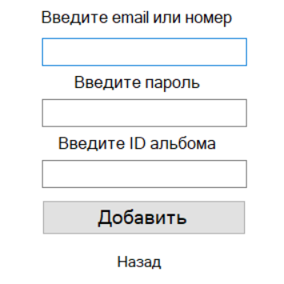

Сохранение и импорт
Обработав изображение, Вы можете его сохранить и импортировать в любой альбов во Вконтакте, нажав на соответствующие кнопки.
Чтобы сохранить изображение, нужно выбрать место сохрания в проводнике файлов.
Для импорта Вам нужно авторизоваться.

Пользователь должен ввести логин и пароль, а также ID альбома, в который добавится изображение. Если Вы его не знаете, найти эти данные очень просто.
Для этого откройте в браузере нужный альбом. В ссылке после нижнего подчёркивания то, что Вам нужно.